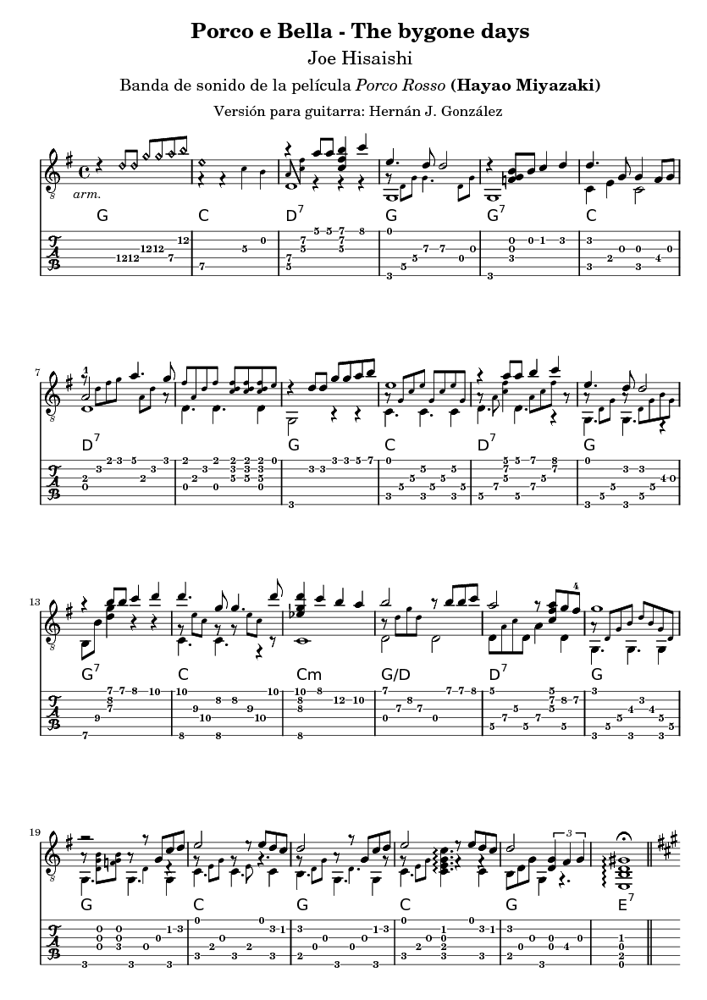
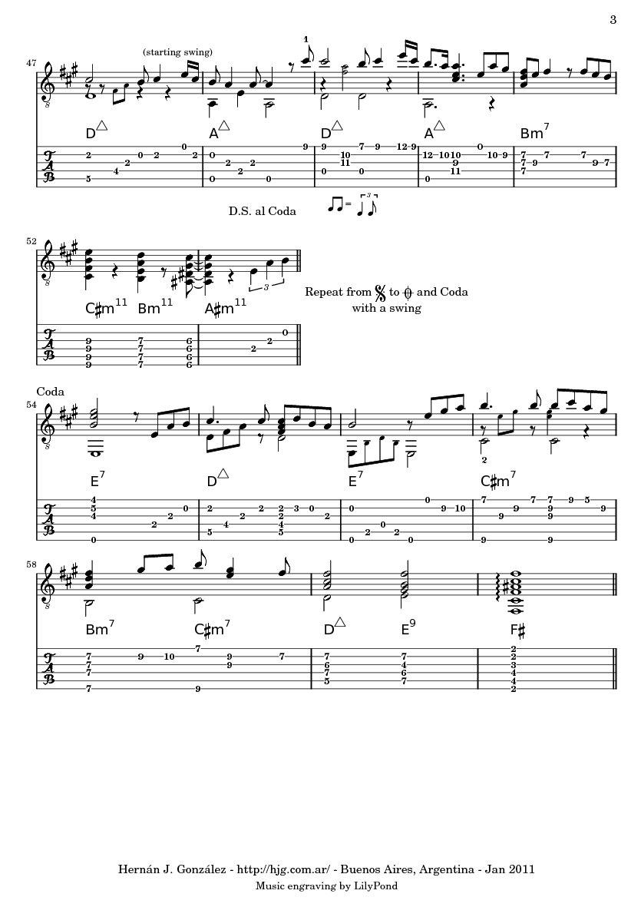
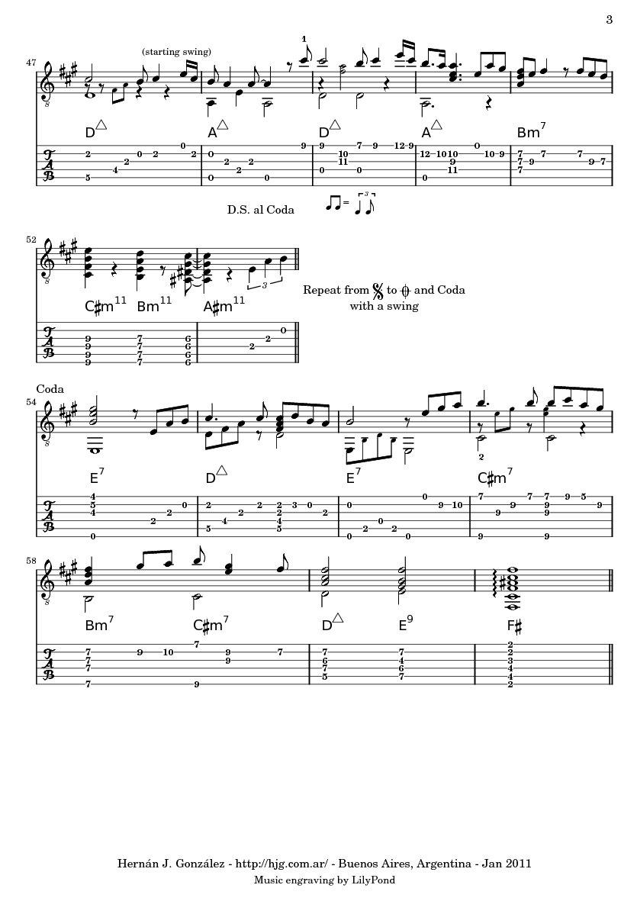
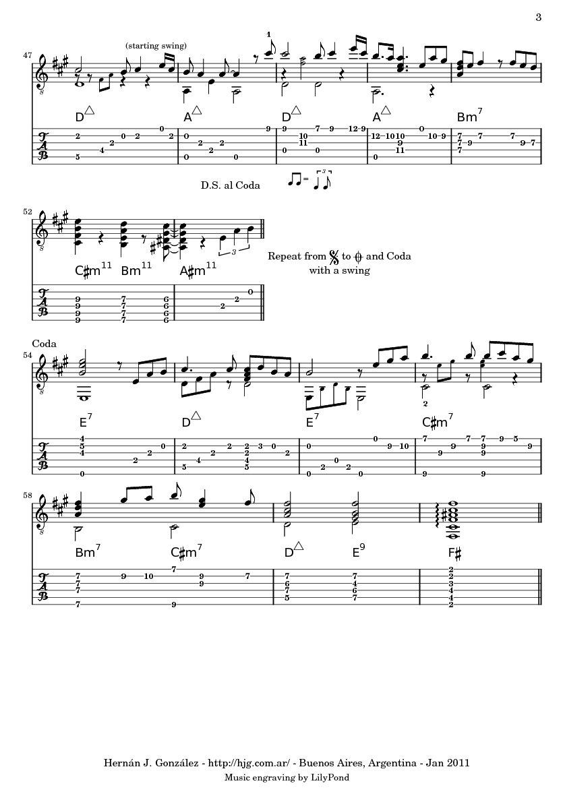
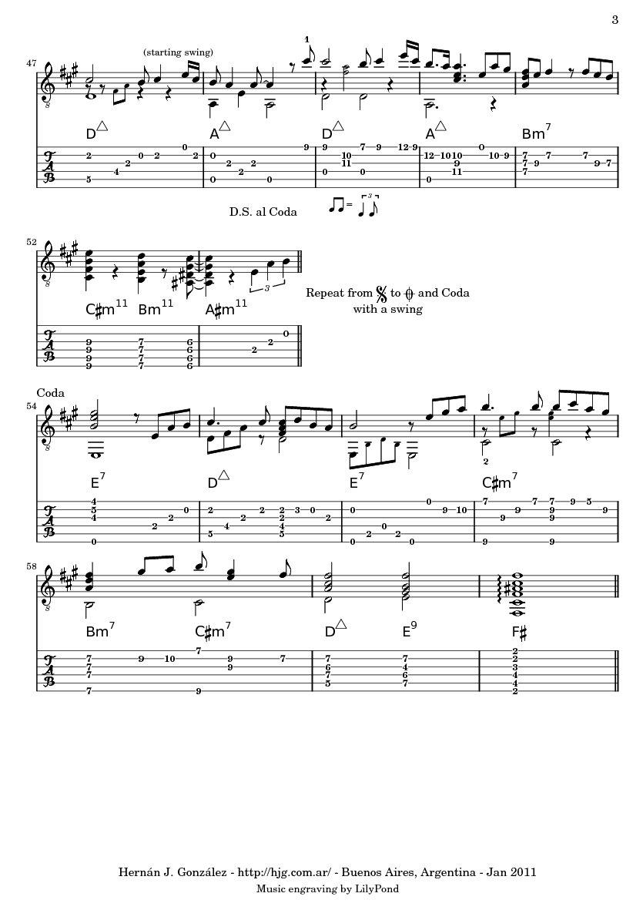
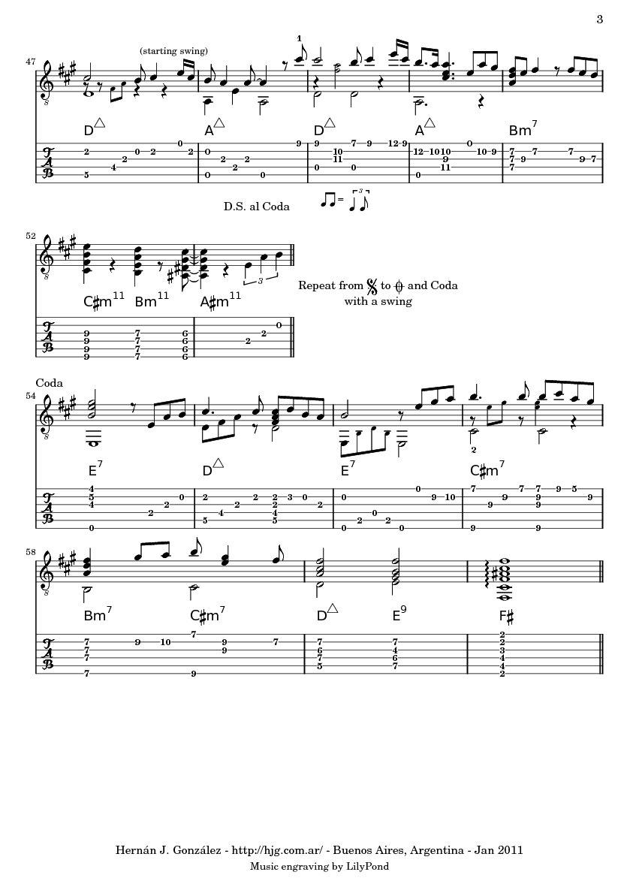

Porco e Bella - The bygone days
de Joe Hisaishi
Dos canciones de la banda de sonido de película
Porco Rosso
de Miyazaki
Mi arreglo para guitarra.
PDF
·
video
más partituras
·
Mi sitio Ghibli


PDF
·
video
más partituras
·
Mi sitio Ghibli
By:
Hernán J. González
hgonzalez@gmail.com
 


